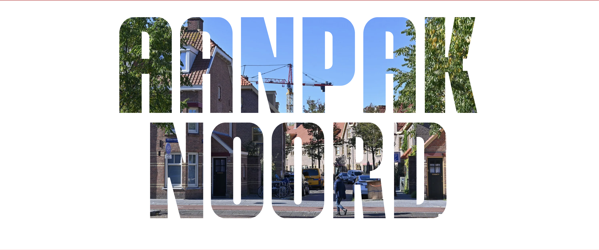

Een ontmoetingsplek die weer leeft
In Nieuwendam vertellen bewoners hoe een vertrouwde plek opnieuw een rol kreeg in de buurt.
Lees meer →
Dichtbij wat er speelt
Er verandert veel in Amsterdam Noord. Er komen steeds meer nieuwe woningen en nieuwe mensen. Maar er zijn ook buurten waar mensen wonen die het moeilijk hebben. Daar is bijvoorbeeld achterstallig onderhoud aan woningen en in de openbare ruimte. Mensen leven in armoede en de jeugd heeft er minder kansen. Er moet iets gebeuren, want de verschillen zijn steeds duidelijker te zien. Met Aanpak Noord willen we dat meer in evenwicht brengen. Daarvoor is tijd nodig en een andere manier van werken.
Scroll door de focusbuurten van Aanpak Noord om te zien wat er speelt in jouw buurt.
Verhalen over bewoners en ondernemers die Noord elke dag een stukje mooier maken.
In Nieuwendam vertellen bewoners hoe een vertrouwde plek opnieuw een rol kreeg in de buurt.
Lees meer →Een verhaal uit De Banne over vertrouwen, sleutelfiguren en praktische hulp dichtbij huis.
Lees meer →Een Noordelijk verhaal over hoe bewoners en ondernemers samen hun omgeving sterker maken.
Lees meer →Een project dat meer ruimte maakt voor verblijven, ontmoeten en spelen.
Lees meer →Jongeren denken mee over hun buurt en krijgen ruimte om plannen zichtbaar te maken.
Lees meer →Een terugkerend moment waar bewoners, makers en kleine ondernemers elkaar kunnen vinden.
Lees meer →Samen met ouders en scholen werken we aan veiligere loop- en fietsroutes in de wijk.
Lees meer →Een aanpak voor warme plekken in Noord met aandacht voor gezondheid en toegankelijkheid.
Lees meer →Snellere routes naar hulp, taal, werk en ondernemersnetwerken via herkenbare plekken in de buurt.
Lees meer →Aanpak Noord is er om hardnekkige verschillen tussen buurten kleiner te maken en bewoners beter te ondersteunen.
We werken aan sterkere buurten met meer kansen voor bewoners, betere woningen en een fijnere leefomgeving.
Aanpak Noord is opgezet vanuit de gemeente Amsterdam, samen met partners en bewoners in Noord.
De aanpak wordt betaald vanuit publieke middelen en samenwerking met betrokken partners en programma's.
Aanpak Noord richt zich op de focusbuurten in Amsterdam Noord waar extra aandacht en investeringen nodig zijn.
Stuur een mailtje naar aanpaknoord@amsterdam.nl. We proberen je vraag dan zo snel mogelijk te beantwoorden.